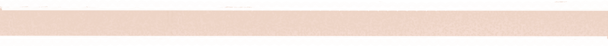
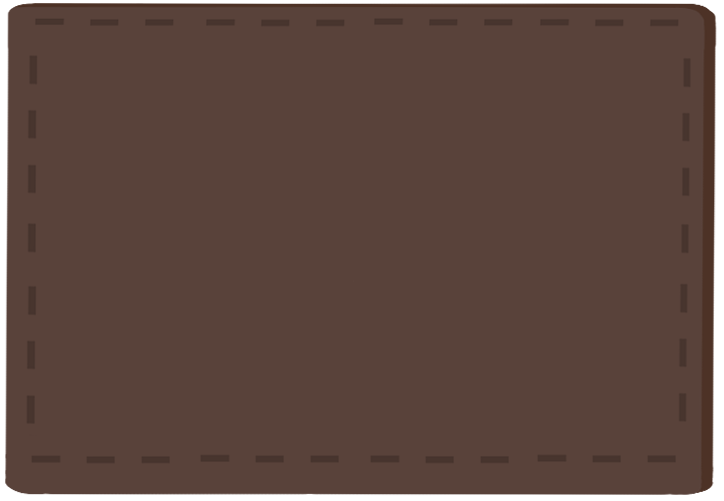

Mooneeta Bun(S3723063) |
My name is Moon. I'm ethnically Cambodian, but I was born and
raised in Australia. Very recently, I've switched from a Biotechnology
degree to an IT degree. I've an enduring interest in biological sciences,
and I see this as a natural extension of that interest. Developments in
IT push scientific progress in fields like biology, and I'm interested
in becoming a merging point between the two subjects. Currently I have
a strong background in biological science, but I'm new to IT. I'm
interested in software programming. Apart from that, I have a love
for creative arts. My free time is spent reading, writing, drawing,
and consuming media related to those topics. I form the 'M' initial
of team RHAMJET.